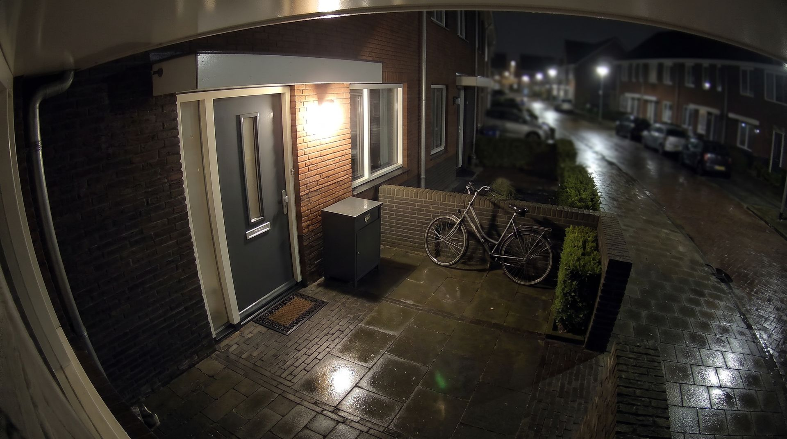
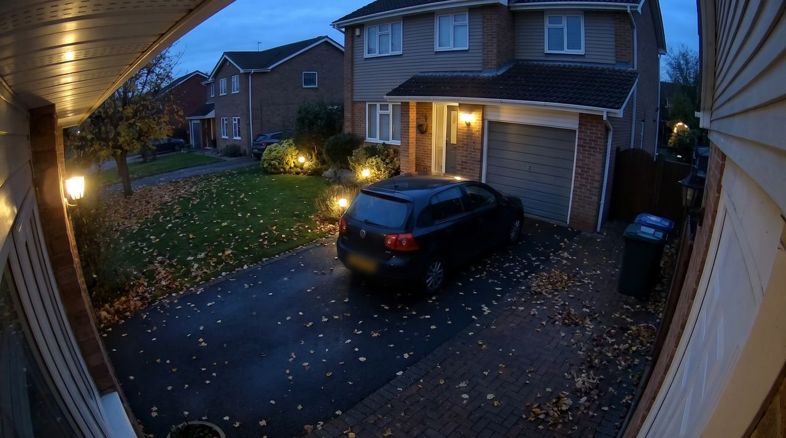
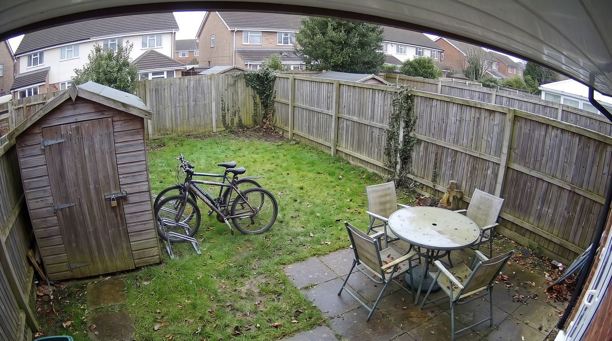
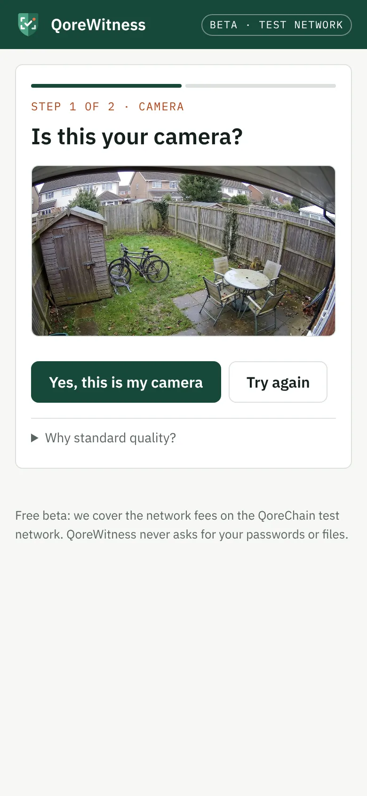
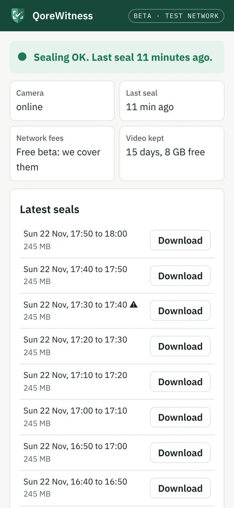

Sealed video for home cameras
Video evidence you can trust again.
QoreWitness seals your camera footage as it is recorded, so you can always prove it has not been tampered with. It all happens locally, and your videos never leave your home.
Works with cameras that offer an RTSP or ONVIF stream. Check yours.

CAM 1 · 22-11-2026 · 02:14:07REC
CAM 2 · 02:14:12
CAM 3 · 02:14:18- Recorded
- 22 Nov 2026, 02:14:07
- Sealed on the public ledger
- Not modified since sealing
3f9a 71c2 · · · 8d40 e04bWhy it matters
When any video can be faked, yours deserves proof.
Until recently, video evidence was enough to prove what really happened. With AI video manipulation, that trust is eroding fast. QoreWitness restores it by pinning every video to the time it was recorded and proving that not a single pixel has changed since.
Be believed
After a break-in, a dispute or an accident, you can show an insurer, a lawyer or a neighbour that your footage is the untouched original.
Keep your privacy
Your video stays at home. QoreWitness creates a digital fingerprint of your video stream and keeps that, and only that, on a public record.
Let anyone check
Whoever receives your video can confirm the seal online with QoreWitness Verify, in seconds, without an account and without having to take our word for it.
How it works
Seal, keep, prove.
1. Seal
As your camera records, QoreWitness builds a chain of digital fingerprints and stores them on a public ledger. Change a single pixel of the original video later and the seal breaks.
2. Keep
Your recordings stay safely on your own computer at home, together with the seals that belong to them. Nothing changes in how you use your camera.
3. Prove
If you ever need to provide video evidence, just share the clip with its QoreWitness seal. Anyone can verify it online and see a clear green result.
The app
Simple from the very first screen.
QoreWitness finds the cameras on your network, shows you a picture so you know you picked the right one, and then gets to work. After that, one glance at your dashboard tells you that all is well, and every recording is one tap away from a sealed copy.

Pick your camera 
Confirm its picture 
Check your dashboard
What you need
Your camera, a computer that stays on, and a browser.
QoreWitness runs quietly on a small computer at home, and setting it up takes about an hour. You paste one line, and everything after that happens in your browser.
A compatible camera
Any camera that shares an RTSP or ONVIF video stream on your home network. See the camera list.
An always-on computer
A Raspberry Pi 5 with a USB SSD, a mini PC, a home server or a NAS. It runs anywhere Docker runs.
Any browser
For the setup, for your dashboard, and for checking a video with QoreWitness Verify.
Built in the open
Proof you can check, from people who show their work.
QoreWitness is open source, and every seal can be checked without trusting us. Our own home camera has been sealing its footage around the clock since 9 November 2026. See the facts and the limits.
What a seal proves, and what it cannot
- A seal proves when a video existed and that it has not changed since it was sealed. It cannot prove that the scene itself was real.
- A court decides for itself how much weight to give it, as with any evidence.
Give your footage the proof it deserves.
Setup takes about an hour, and from then on QoreWitness simply keeps going.